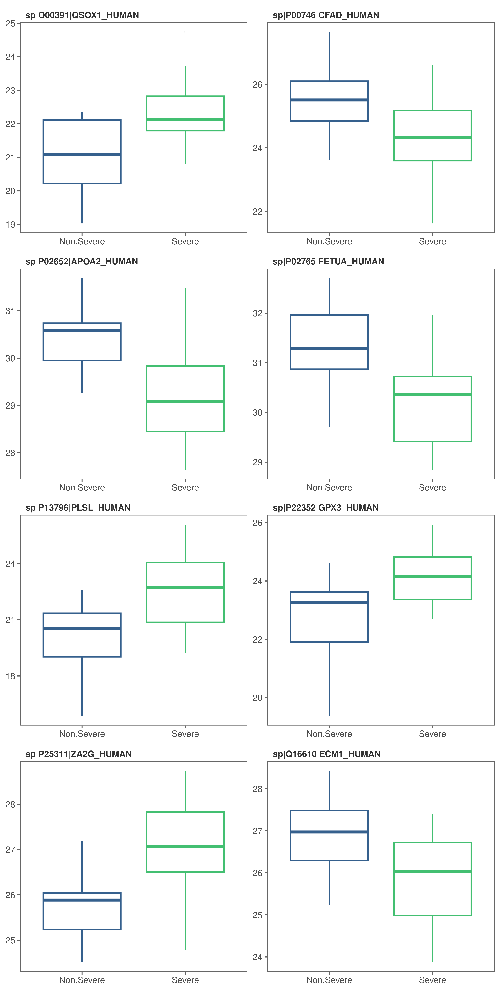
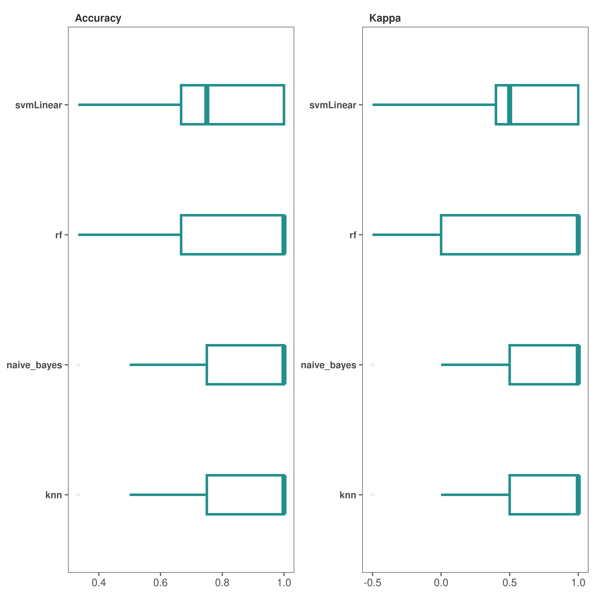
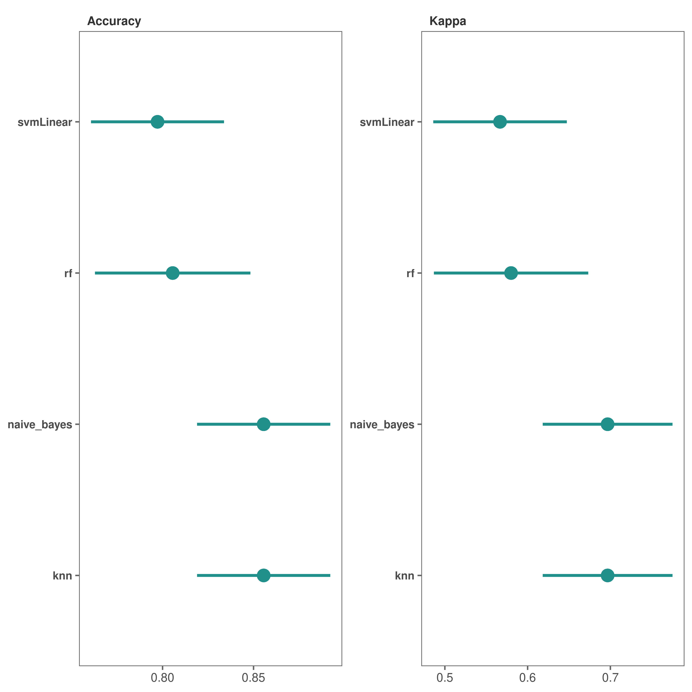
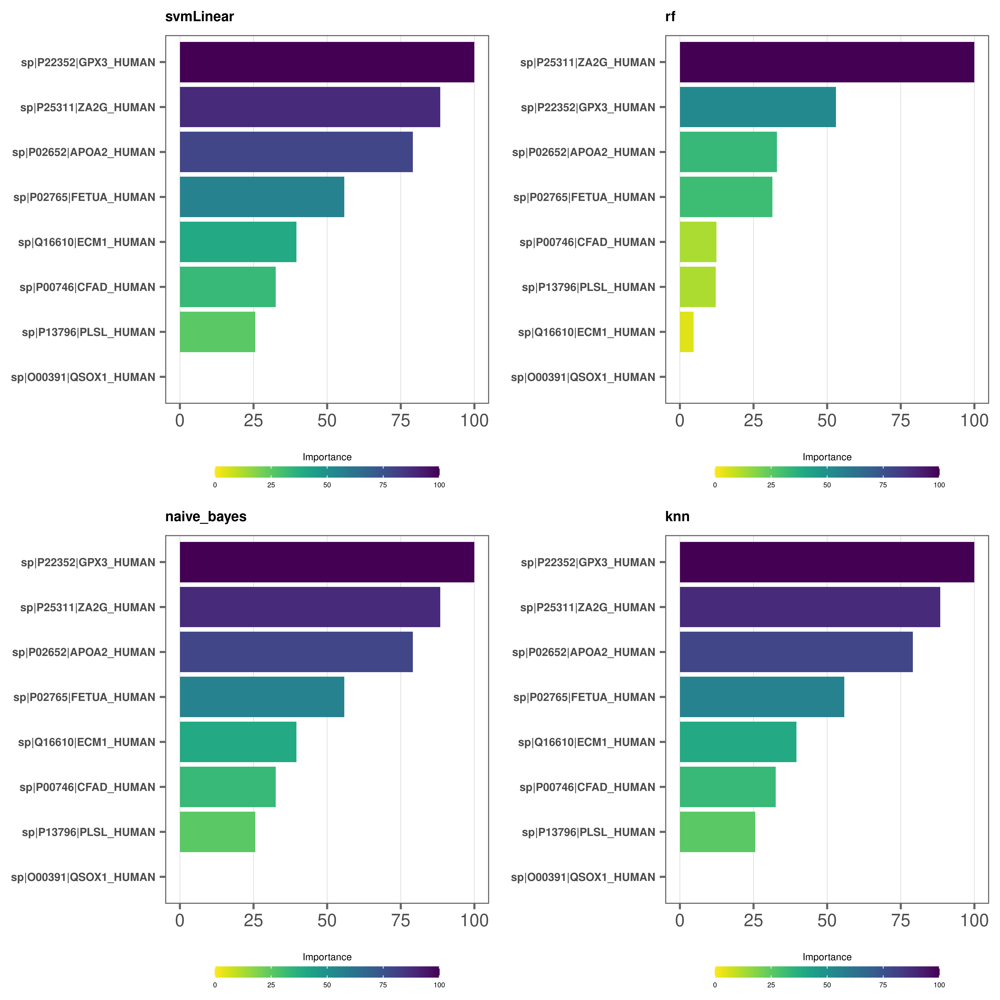

Modeling with promor
Chathurani Ranathunge
Source:vignettes/promor_for_modeling.Rmd
promor_for_modeling.RmdIntroduction
This tutorial shows you how you can use promor to build predictive models using top differentially expressed proteins.
We recommend that you first go through the simple working example provided in Introduction to promor to get acquainted with promor’s functionality.
vignette("intro_to_promor")A tutorial for proteomics data without technical replicates is provided here: promor: No technical replicates
A tutorial for proteomics data with technical replicates is provided here: promor: Technical replicates
Data
For this tutorial we will be using a previously published data set from Suvarna et al. (2021). In this study, authors used differentially expressed proteins between 33 severe and 18 non-severe COVID patients to build models to predict COVID severity. Here, we are using a subset of that data set (18 severe and 18 non-severe COVID patients).
Workflow
 Figure 1. A schematic diagram showing the suggested promor workflow for building predictive models with protein candidates
Figure 1. A schematic diagram showing the suggested promor workflow for building predictive models with protein candidates
You can access the help pages for functions shown above and more using ?function_name
Input data
To build predictive models with promor, you need:
A fit_df object produced by running
find_depfor differential expression analysis. For this example, we will be usingcovid_fit_dfobject provided with the package.An norm_df object which is a data frame of normalized protein intensities used as input for
find_dep. We will be usingcovid_norm_dfobject provided with the package.
1. Create a model_df object
Let’s first create a model_df object with the example fit_df and norm_df objects provided with the package.
Notes
pre_processfunction uses information from the two objects to create a data frame of protein intensities in a suitable format for modeling.
- If you run this step with default options, highly correlated proteins (features) will be identified and removed from the data frame.
- Alternatively, you can set
find_highcorr = FALSEandrem_highcorr = FALSE, but it is not recommended. You can also tweak thecorr_cutoffto change the threshold for identifying highly correlated proteins.
- Note: if no or few differentially expressed proteins were identified at the given adjusted p-value cutoff, you can choose to relax these criteria to use more proteins in modeling.
- See
?pre_processfor more information.
# Load promor
library(promor)
# Create a model_df object with the top differentially expressed proteins.
covid_model_df <- pre_process(
fit_df = covid_fit_df,
norm_df = covid_norm_df
)
# Let's take a look at the first few rows of the model_df object
head(covid_model_df)2. Visualize protein (feature) variation among conditions (classes)
At this stage, we can visualize the feature variation among classes using box plots or density plots.
Notes
- Your best proteins (features) for modeling are those that show distinct patterns of variation among conditions.
- For example, these proteins may show mostly non-overlapping density distributions.
Feature plots - box plots
# Box plots (default) to visualize feature variation
feature_plot(
model_df = covid_model_df,
n_row = 4,
n_col = 2
)
Feature plots - density plots
# Alternatively, make density plots
feature_plot(
model_df = covid_model_df,
type = "density",
n_row = 4,
n_col = 2
)- At this stage, if you decide to remove a protein or some proteins from the
model_dfobject, you can do so withrem_feature.
3. Split model_df object into training and test data sets
Next, we will split the model_df object into training and test data sets while maintaining class or condition proportions in each set.
Notes
- By default, 80% of the data will be added to the training set while 20% will be added to the test set.
- You can change these proportions by setting
train_sizeto a higher or a lower value.
# Create a split_df object by splitting data into training and test data set. Don't forget to fix the random seed for reproducibility.
covid_split_df <- split_data(model_df = covid_model_df, seed = 8314)Access items in the split_df object.
# You can access the items in the training data set as follows,
covid_split_df$training
# Similarly, access the test data set
covid_split_df$test4. Train machine learning models on the training data set
We will be using some functions from the caret package to train models on our training data set.
Notes
- A list of all the available machine learning algorithms can be found here: http://topepo.github.io/caret/train-models-by-tag.html.
- Note that some algorithms may require additional arguments. See
caretfunctionstrainandtrainControlfor more details.- The default list of classification-based algorithms provided include:
"svmRadial"- A support vector machine algorithm"glm"- A generalized linear model algorithm"rf"- A random forest algorithm"xgbLinear"- An extreme gradient boosting algorithm
# Create a model_list object by training models on the training data set using the default list of algorithms.Don't forget to fix the random seed for reproducibility.
covid_model_list <- train_models(split_df = covid_split_df, seed = 351)
# Alternatively, you may use a custom list of algorithms.
covid_model_list <- train_models(
split_df = covid_split_df,
algorithm_list = c("glm", "rf"),
seed = 351
)5. Check model performance
We can now check how models built with each algorithm performed on the resamples of the training data set.
Performance plots - box plots
# Box plots (default) to visualize model performance
performance_plot(model_list = covid_model_list)
Performance plots - dot plots
# Make dot plots
performance_plot(
model_list = covid_model_list,
type = "dot"
)
*It looks like, except for "glm" method, all others performed fairly well.
6. Check variable importance
We can check which proteins out of the 10 are most important in the models.
Variable importance plots - lollipop plots
# Make lollipop plots (default)
varimp_plot(
model_list = covid_model_list,
text_size = 7,
n_row = 2,
n_col = 2
)Variable importance plots - bar plots
# Make bar plots
varimp_plot(
model_list = covid_model_list,
type = "bar",
text_size = 7,
n_row = 2,
n_col = 2
)
- At this stage you can again use
rem_featurefunction to remove proteins with lower importance in the models and repeat steps from Step 3.
7. Test models on the test data set
We are now ready to test our models on never-before-seen data or our test data set.
# First we run the function with type = "prob" to get a probability list
covid_prob_list <- test_models(
model_list = covid_model_list,
split_df = covid_split_df,
type = "prob"
)Alternatively, you can output a list of predictions and output a confusion matrix for further analysis.
# We run the function with type = "raw" to get a prediction list and output a confusion matrix
covid_pred_list <- test_models(
model_list = covid_model_list,
split_df = covid_split_df,
type = "raw",
save_confusionmatrix = TRUE
)8. Build Receiver Operating Characteristic (ROC) curves
Finally, we can build ROC plots to assess the predictive power of our models.
Notes
roc_plotfunction requires aprobability_listobject.- Make sure to set
type = "prob"when runningtest_modelsto output aprobability_listobject.
# Make bar plots
roc_plot(
probability_list = covid_prob_list,
split_df = covid_split_df
)